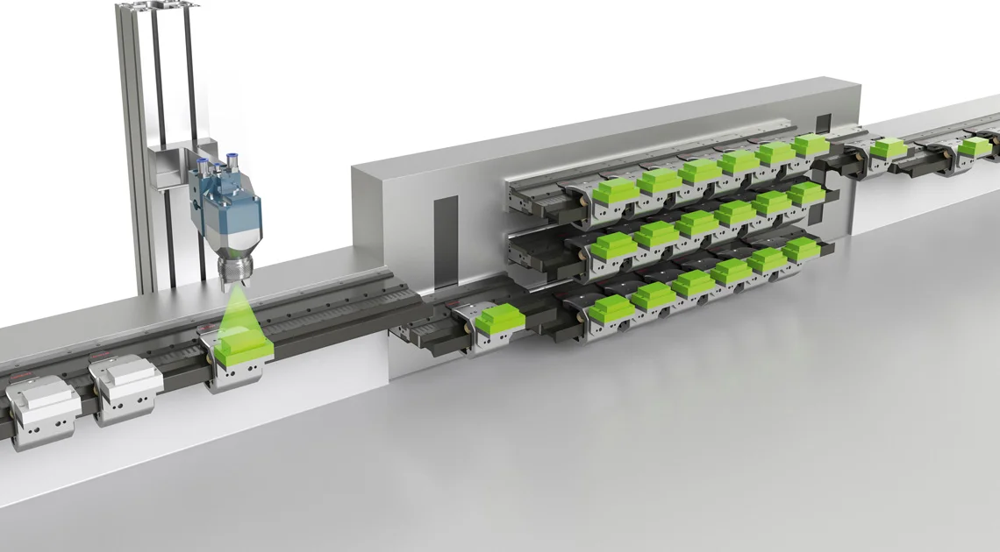

TwinCAT 3 is a software platform developed by Beckhoff Automation for programming,
configuring, and controlling automation systems. It is a comprehensive automation
and control software suite widely used in industrial automation, machine control,
and other applications. TwinCAT 3 is the successor to TwinCAT 2 and offers several
advanced features and improvements
t
TwinCAT 3 is widely used in industries such as manufacturing, automotive,
packaging, and more. It provides a flexible and versatile platform for creating
custom automation solutions, from simple control tasks to complex and highly synchronized systems.

Beckhoff's XTS (eXtended Transport System) is a revolutionary motion control and automation technology
that replaces traditional conveyor systems with a highly flexible, precise, and scalable solution.
It uses a linear motor system with magnetically levitated movers, eliminating the need for physical
contact between the transport surface and objects. This allows for free movement in multiple directions,
high precision, and rapid acceleration. The XTS system is programmed and controlled through Beckhoff's
TwinCAT software, making it adaptable to various industries and applications, including assembly,
handling, testing, and packaging. Its modularity and scalability make it suitable for both
small-scale and large-scale automation tasks, enabling efficient and cost-effective solutions.
Setting up a IXON router connected to the XTS, allowing access to the HMI from a phone app.
Beckhoff's XPlanar is an innovative motion control technology that utilizes magnetic levitation
(maglev) to move objects with exceptional precision, flexibility, and scalability.
It operates without physical contact, allowing objects to move freely in all directions,
rotate, and be positioned with sub-millimeter accuracy. This system offers high dynamics,
modularity, and suitability for clean and hygienic environments, making it applicable to a
wide range of industries, including assembly, material handling, testing, pharmaceuticals,
and electronics manufacturing. Controlled and programmed using Beckhoff's TwinCAT automation
software, XPlanar revolutionizes traditional linear motion systems by providing a versatile
and customizable solution for diverse automation needs.
PLC (Programmable Logic Controller) coding refers to the process of creating a control program for a PLC,
a specialized computer used in industrial automation. This code is written in a programming language
that is typically ladder logic, structured text, function block diagrams, or similar industrial
languages. PLC coding involves designing a sequence of logical instructions that dictate how the
PLC should control machinery, processes, and systems. These instructions can include logic statements,
timers, counters, input and output control, and communication with other devices. PLC coding is
crucial in industrial automation as it ensures that machines and processes operate efficiently,
safely, and according to specific requirements, making it a fundamental component of industrial
control and automation systems.
TwinCAT Motion is a software module developed by Beckhoff Automation as part of their TwinCAT
automation software suite. It is designed for precise motion control applications in various
industries, including manufacturing and robotics. TwinCAT Motion provides tools and libraries
for configuring and controlling motion components such as servo drives, motors, and actuators.
It enables users to create and execute complex motion profiles, manage position feedback, and
achieve high levels of accuracy and synchronization in their automation systems. This software
module is essential for applications like CNC machining, conveyor systems, pick-and-place
operations, and robotics, where precise and coordinated motion control is paramount. TwinCAT
Motion simplifies the development and programming of motion-based tasks within an industrial
automation environment, enhancing efficiency and precision.
TwinCAT Safety is a software solution developed by Beckhoff Automation that focuses on ensuring
the safety and protection of machinery and processes in industrial automation applications.
It is an integral part of the TwinCAT software suite. TwinCAT Safety provides tools and libraries
for implementing safety functions and standards in compliance with safety regulations and industry
standards (e.g., ISO 13849, IEC 61508). This software enables the development of safety-related
control functions such as emergency stop, safety interlocks, safe motion control, and safe
communication. By integrating safety into the same platform as standard automation control
(TwinCAT PLC), it simplifies the design, programming, and management of safety systems, improving
the overall safety and reliability of industrial processes and machinery.
TwinCAT Vision is a software module developed by Beckhoff Automation that enhances industrial
automation systems by integrating vision capabilities. This software is part of the TwinCAT automation
software suite. TwinCAT Vision allows for the integration of machine vision technologies, such
as cameras and image processing, into control and automation applications. It provides tools and
libraries for image acquisition, processing, and analysis, enabling automation systems to make
decisions based on visual information. Applications for TwinCAT Vision include quality control,
object recognition, barcode reading, and part identification in industries such as manufacturing
and logistics. By incorporating vision capabilities into the automation environment, TwinCAT Vision
enhances the system's ability to monitor and respond to visual cues, improving accuracy and
efficiency in industrial processes.
TwinCAT OPC UA is a software module developed by Beckhoff Automation as part of the TwinCAT
automation software suite. It facilitates communication and data exchange between industrial
automation systems and other devices or software applications using the OPC UA (Unified Architecture)
standard. OPC UA is a widely adopted protocol in industrial automation for secure and standardized
data exchange.
TwinCAT OPC UA provides tools and libraries that enable your TwinCAT-controlled systems to act as
OPC UA servers or clients, allowing seamless integration with a wide range of industrial devices and
software platforms. This integration simplifies data sharing, monitoring, and control between different
components of an automation system, making it easier to collect, analyze, and act upon data for improved
efficiency and decision-making.
In summary, TwinCAT OPC UA enhances the interoperability and connectivity of Beckhoff's automation
systems by providing support for the OPC UA standard, which is crucial for modern industrial automation
environments where seamless communication between diverse devices and software is essential.